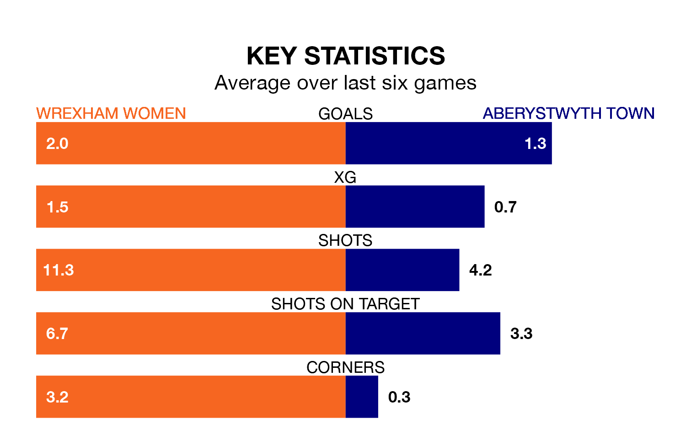

Relegation candidates Aberystwyth Town face a challenge away against high-flying Wrexham Women on Sunday.
Aberystwyth Town are seventh in the Welsh Premier Women's League table, and have picked up four wins and five draws in their 17 games to date.
Wrexham, meanwhile, are third in the standings with 32 points, having won 10 and drawn two of their first 18 matches, and are 14 points behind table-toppers Cardiff City.
With 21 goals in 17 games so far this season, Aberystwyth are the league's second-lowest scorers with 1.2 goals per game. But they are conceding fewer than average too, letting in 29 goals at a rate of 1.7 per game.
Wrexham, meanwhile, are above average scorers, with 2.1 goals per game, compared to a league average of 1.8. They have conceded 1.8 goals per game.
The hosts are in mixed form in the Welsh Premier Women's League, with two wins and a draw from their last six games.
With a win and two draws over that period, Town's form is slightly worse – they have taken five points from 18, compared to Wrexham's seven.
In the last three years, Wrexham and Aberystwyth have played each other on three occasions. Wrexham won all of them.
Their last meeting was on Wednesday, when Wrexham won 2-0 away.
Wrexham's last match was on Wednesday, a 2-0 win against Aberystwyth Town.
Aberystwyth lost 2-0 against Wrexham Women last time out, also on Wednesday.
Updated: 10:31 (UTC), 31/03/24